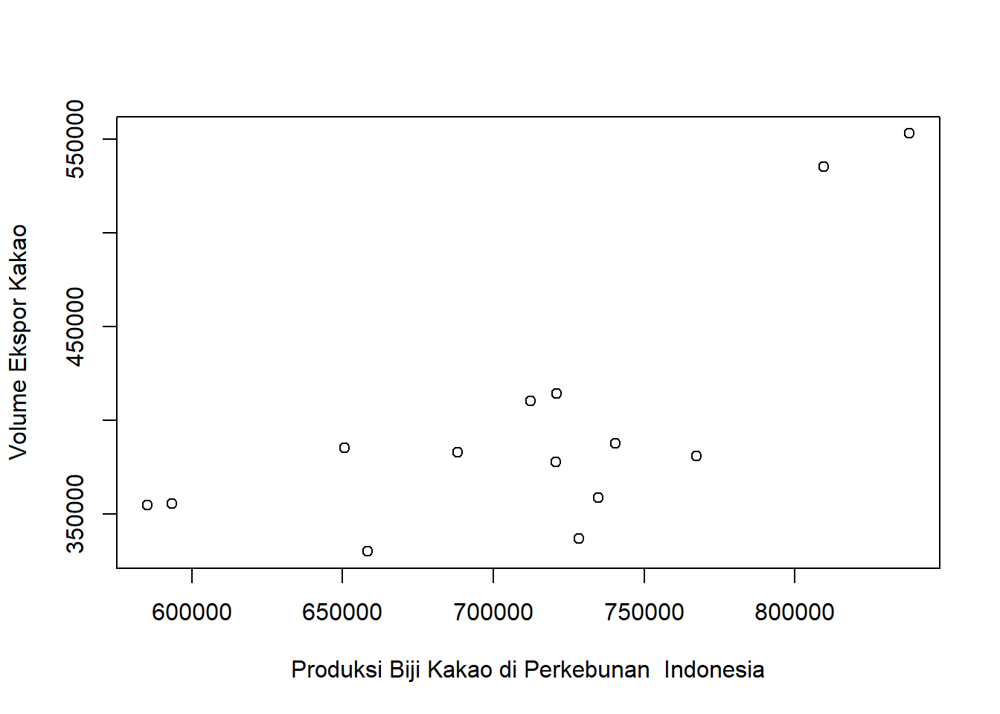

Pengaruh Produksi Biji Kakao di Perkebunan Indonesia Terhadap Volume Ekspor Kakao Pada Tahun 2009-2022
Metode Penelitian Politeknik APP Jakarta
Author
Davina Aurelia Rachma
Published
January 11, 2024
1 Pendahuluan
1.1 Latar belakang
Dengan adanya keinginan setiap negara untuk memiliki pertumbuhan ekonomi yang pesat, maka setiap negara melakukan kegiatan jual beli dengan negara lain, salah satunya melalui kegiatan ekspor dan impor yang dilakukan dengan negara lain. Tujuan dari dilakukannya kegiatan ekspor dan impor adalah guna untuk meningkatkan pendapatan daerah tersebut dan juga memenuhi kebutuhan negara. Adanya kegiatan ekspor (jual) dan impor (beli) dinegara tersebut maka akan memberikan pengaruh terhadap pertumbuhan ekonomi, karena baik ekspor maupun impor keduanya sama-sama memberikan efek dan berperan terhadap kegiatan ekonomi yang akan berpengaruh pada pertumbuhan ekonomi.
1.2 Ruang lingkup
Ruang lingkup pada analisis ini memuat data tentang Pengaruh Produksi Biji Kakao di Perkebunan Indonesia Terhadap Volume Ekspor Kakao Pada Tahun 2009-2022. Data yang digunakan adalah data yang bersifat time series yaitu dalam kurun waktu 2009-2022 dengan satuan Ton, data inilah yang kemudian menjadi objek penelitian.
1.3 Rumusan masalah
Apakah adanya pengaruh produksi biji kakao di perkebunan Indonesia terhadap volume ekspor kakao?
Apakah jumlah produksi biji kakao di perkebunan Indonesia berpengaruh besar terhadap volume ekspor kakao?
1.4 Tujuan dan manfaat penelitian
Tujuan penelitian ini untuk mengetahui pengaruhnya produksi biji kakao di perkebunan Indonesia terhadap volume ekspor kakao pada tahun 2009-2022.
Manfaat penelitian ini adalah memberitahu masyarakat agar mengerti bahwa adanya pengaruh produksi biji kakao di perkebunan Indonesia terhadap volume ekspor kakao pada tahun 2009-2022.
1.5 Package
Packages yang digunakan antara lain sebagai berikut:
library('tidyverse')
Warning: package 'tidyverse' was built under R version 4.3.2
Warning: package 'ggplot2' was built under R version 4.3.2
Warning: package 'tibble' was built under R version 4.3.2
Warning: package 'tidyr' was built under R version 4.3.2
Warning: package 'readr' was built under R version 4.3.2
Warning: package 'purrr' was built under R version 4.3.2
Warning: package 'dplyr' was built under R version 4.3.2
Warning: package 'stringr' was built under R version 4.3.2
Warning: package 'forcats' was built under R version 4.3.2
Warning: package 'lubridate' was built under R version 4.3.2
── Attaching core tidyverse packages ──────────────────────── tidyverse 2.0.0 ──
✔ dplyr 1.1.4 ✔ readr 2.1.5
✔ forcats 1.0.0 ✔ stringr 1.5.1
✔ ggplot2 3.4.4 ✔ tibble 3.2.1
✔ lubridate 1.9.3 ✔ tidyr 1.3.0
✔ purrr 1.0.2
── Conflicts ────────────────────────────────────────── tidyverse_conflicts() ──
✖ dplyr::filter() masks stats::filter()
✖ dplyr::lag() masks stats::lag()
ℹ Use the conflicted package (<http://conflicted.r-lib.org/>) to force all conflicts to become errors
library('readxl')
Warning: package 'readxl' was built under R version 4.3.2
library('WDI')
Warning: package 'WDI' was built under R version 4.3.2
2 Studi pustaka
Kakao (Theobroma cacao) merupakan salah satu komoditi hasil perkebunan Indonesia yang dapat diolah menjadi produk kokoa dan cokelat yang mengandung antioksidan alami. Biji kakao mengandung senyawa polifenol yang berperan sebagai antioksidan. Polifenol golongan flavonoid terutama katekin dan epikatekin adalah komponen utama dalam biji kakao (Osakabe et al., 1998). Pada Peraturan Pemerintah Nomor 10 Tahun 2021, ekspor merupakan kegiatan mengeluarkan barang dari daerah pabean. Daerah pabean merupakan suatu daerah milik Republik Indonesia yang terdiri dari wilayah darat, perairan, dan udara yang juga mencakup seluruh daerah tertentu yang berada dalam Zona Ekonomi Eksklusif (ZEE). Penjelasan sederhananya, arti ekspor adalah kegiatan menjual barang atau jasa ke luar negeri. Seseorang atau lembaga yang melakukan ekspor disebut dengan eksportir. Eksportir sendiri merupakan kegiatan badan hukum atau perseorangan yang melakukan kegiatan ekspor. Kegiatan ekspor yang dilakukan dalam skala besar tentunya akan melibatkan Bea Cukai sebagai pengawas lalu lintas suatu negara. Aktivitas ekspor biasanya terjadi ketika suatu negara sudah mampu memproduksi barang atau jasa dengan jumlah yang besar dan kebutuhan dalam negeri sudah tercukupi. Saat melakukan kegiatan ekspor, maka negara tersebut akan menerima pemasukan yang biasa disebut sebagai devisa. Semakin sering suatu negara melakukan ekspor, maka akan semakin besar pula keuntungan devisa yang diperoleh.
3 Metode penelitian
3.1 Data
Tahun
ProduksI Biji
Volume Ekspor
2009
809.503
535.236
2010
837.918
552.880
2011
712.231
410.257
2012
740.531
387.790
2013
720.862
414.092
2014
728.414
336.679
2015
593.331
355.321
2016
658.399
330.029
2017
585.246
354.880
2018
767.280
380.827
2019
734.795
358.481
2020
720.660
377.849
2021
688.210
382.712
2022
650.612
385.421
Penelitian ini menggunakan data Produksi Biji Kakao di Perkebunan Indonesia Terhadap Volume Ekspor Kakao Pada Tahun 2009-2022 dari Badan Pusat Statistik (BPS)
library('readxl')library('tidyverse')dat<-read_excel('C:/Users/AUREL/OneDrive/METOPEN/TUGAS UAS/kakao.xlsx')plot(dat$X,dat$Y,xlab="Produksi Biji Kakao di Perkebunan Indonesia",ylab="Volume Ekspor Kakao")

3.2 Metode analisis
Metode yang dipilih adalah regresi univariat atau Ordinary Least Square (OLS) dengan 1 variabel independen. Penelitian ini bermaksud mencari hubungan antara Produksi Biji Kakao di Perkebunan Indonesia (X) dan Volume Ekspor Kakao (Y). Spesifikasi yang dilakukan adalah:
\[
y_{t}=\beta_0 + \beta_1 x_t+\mu_t
\] di mana \(y_t\) adalah Produksi Biji Kakao di Perkebunan Indonesia (X) dan \(x_t\) adalah Volume Ekspor Kakao (Y).
4 Pembahasan
4.1 Pembahasan masalah
Dikarenakan penelitian ini menggunakan OLS, maka pembahasan yang diberikan mengenai hubungan antara tingkat pengangguran dan jumlah penduduk usia produktif. Data tersebut digabung dan dilakukan regresi sehingga memiliki tampilan seperti berikut :
# A tibble: 6 × 2
X Y
<dbl> <dbl>
1 809503 535236
2 837918 552880
3 712231 410257
4 740531 387790
5 720862 414092
6 728414 336679
X = Produksi Biji Kakao di Perkebunan Indonesia
Y = Volume Ekspor Kakao
4.2 Analisis masalah
Hasil regresinya adalah:
reg<-lm(Y~X,data=dat)summary(reg)
Call:
lm(formula = Y ~ X, data = dat)
Residuals:
Min 1Q Median 3Q Max
-72535 -31756 5107 34141 71963
Coefficients:
Estimate Std. Error t value Pr(>|t|)
(Intercept) -7.640e+04 1.328e+05 -0.575 0.57584
X 6.667e-01 1.861e-01 3.583 0.00376 **
---
Signif. codes: 0 '***' 0.001 '**' 0.01 '*' 0.05 '.' 0.1 ' ' 1
Residual standard error: 48340 on 12 degrees of freedom
Multiple R-squared: 0.5169, Adjusted R-squared: 0.4766
F-statistic: 12.84 on 1 and 12 DF, p-value: 0.003761
5 Kesimpulan
Dari hasil regresi dapat dilihat bahwa setiap jumlah Produksi Biji Kakao di Perkebunan Indonesia mengalami nilai naik turun, maka tingkat Volume Ekspor Kakao mengalami nilai naik turun juga. Dari hasil regresi tersebut dapat disimpulkan bahwa Produksi Biji Kakao di Perkebunan Indonesia berpengaruh terhadap Volume Ekspor Kakao 2009-2022.
6 Referensi
Badan Pusat Statistik. (2023). Statistik Kakao Indonesia 2022 (Vol. 7, pp. 1–86). https://www.bps.go.id/id/publication/2023/11/30/ef4419ba62e6ec7d4490218e/statistik-kakao-indonesia-2022.html
CNBC Indonesia. (n.d.). Mengenal Apa Itu Ekspor Impor, Pengertian, Tujuan & Contohnya. Retrieved January 10, 2024, from https://www.cnbcindonesia.com/mymoney/20220511125907-72-338113/mengenal-apa-itu-ekspor-impor-pengertian-tujuan-contohnya
Sari, P., Utari, E., Praptiningsih, Y., & Maryanto. (2015). Karakteristik Kimia-Sensori dan Stabilitas Polifenol Minuman Cokelat-Rempah. Jurnal Agroteknologi, 09, 54–66.